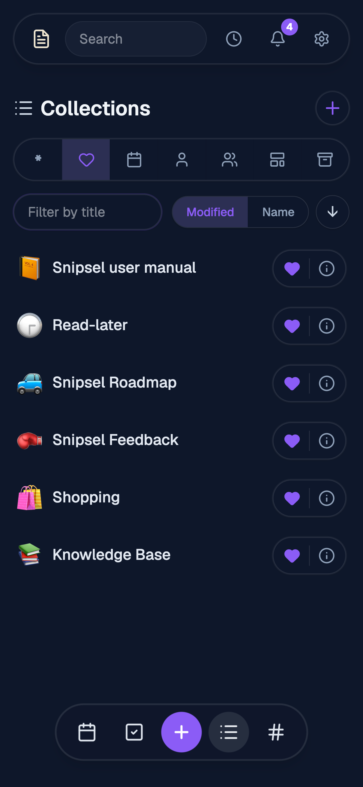
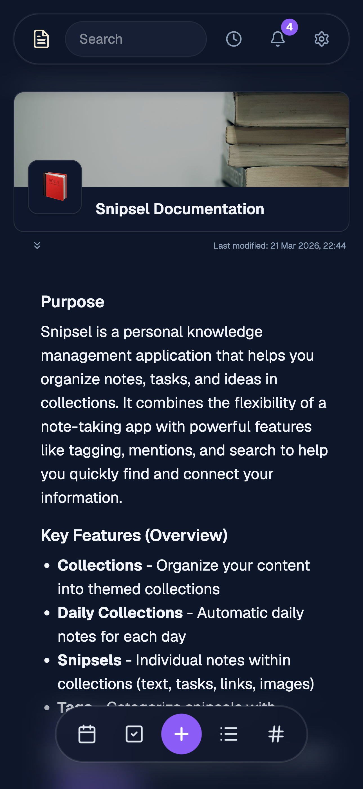
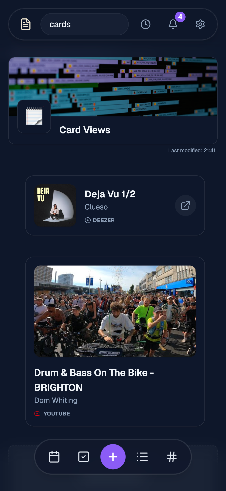
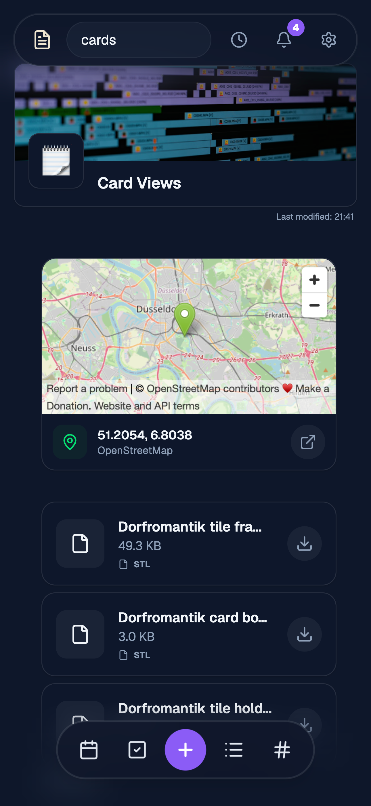
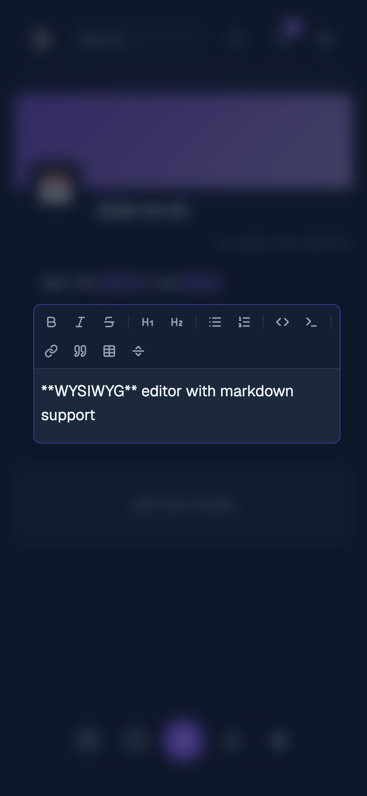
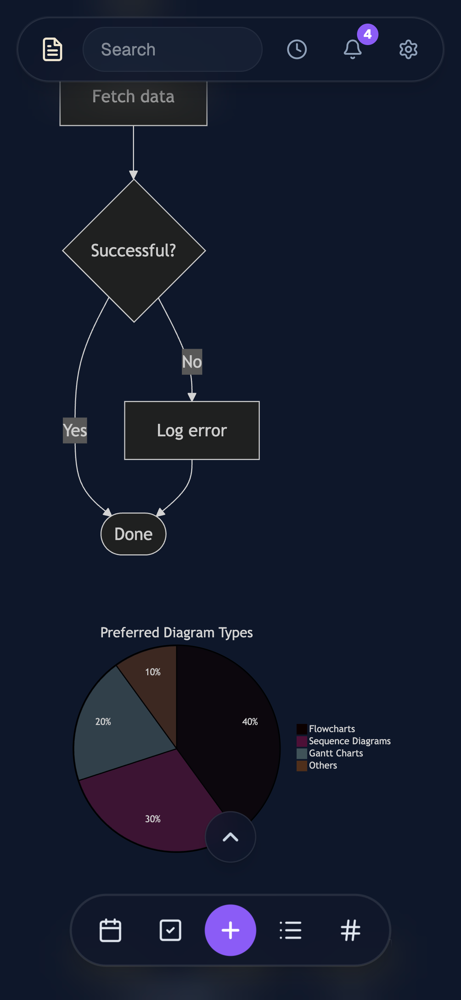
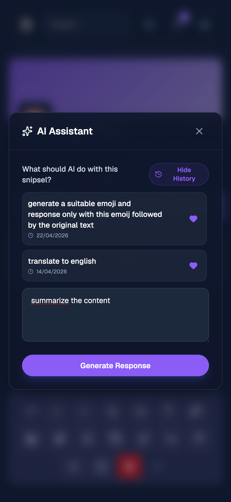
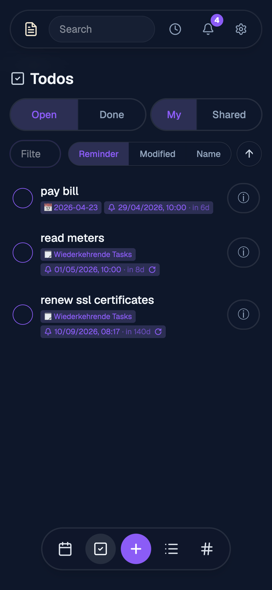
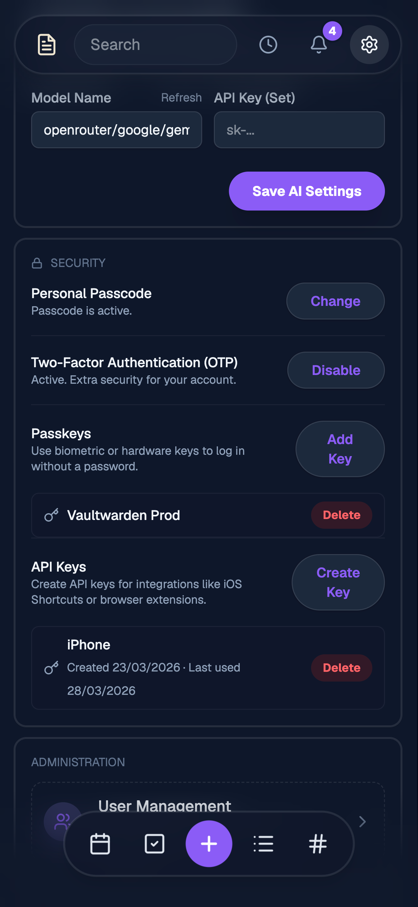

Built for clarity.
Take a look at how snipsel transforms your messy thoughts into structured knowledge.

Collections List

Collection View

Card Views

Media & Web Cards

Advanced Editor

Mermaid Diagrams

AI Prompting

Media Gallery

Unified Tasks Page

Settings & Passkeys